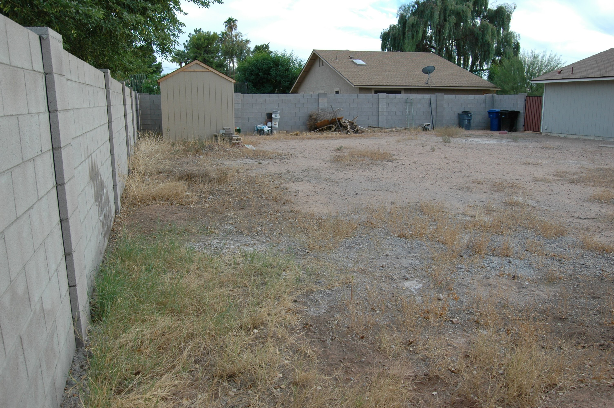

My wife and I bought a massive project of a house in 2017. The house was close to her family, and we got a decent deal on it due to all the sweat equity needed. We downsized from our previous house not knowing that we had an addition to the family on the way. As of May 2020 we've come a long way but are still not quite done. My purpose in writing this is threefold:
- Document the yard's transition from a barren wasteland to an inviting space to play and relax
- Explain the steps we took in detail to help anyone considering something similar
- Practice web development
I hope you gain something useful from our successes and failures or at least enjoy the before and after pictures.
Step 1 - Initial Improvements
A few emergency improvements were necessary before starting on anything "fun." The yard was surrounded by a dilapidated wooden fence. It had completely fallen in two places and could easily be knocked down everywhere else. Anything in the backyard was easily visible and accessible to others. We've had a vacant house broken into before and decided our first steps should be to ensure this doesn't happen again.
We had a block wall installed to replace the fence. We decided on one 5' gate and one 12' double gate on the side for RV parking since we have a corner lot. We also had an 8' x 12' shed installed for $2,000 total through Shed Liquidators. The studs are 1" x 3" and the door tends to sag, but the shed has served its purpose well. There are no pictures from before, but here are a few photos taken shortly after the wall and shed were put in.
Step 2 - Design
Neither my wife nor I consider ourselves creative people, so our design drew largely on several hours of Google Image searches. Among our favorite features were:
- A nice, spacious covered patio
- Grass lawn with sprinkler system
- Rock perimiter and side area
- A well defined border between the two
- Citrus and shade trees
- A variety of desert adapted shrubs and bushes
- Tasteful lighting throughout
We compiled all of these features into a rough sketch and determined the order in which they should be completed. A grass lawn was high on our list, but without a border to separate it from the rocks, a sprinkler system to keep it healthy or a patio from which to enjoy it, we decided it needs to wait.
It's nothing fancy, but this sketch is what we used to help visualize the yard and order the projects appropriately.
Concrete Border
In contrast to other types of borders, concrete seemed to be the most definitive and decorative. We wanted something that would not allow an aggressive bermuda lawn to spread across easily to the rocky perimiter. In hindsight, paying someone would have probably been the better route. It took considerably longer for me to research and prep. Finally pouring the concrete was the simplest part. The steps taken included:
- Defining the border
- Trenching
- Building a frame
- Pouring the concrete
- Let dry, remove the frame, backfill the dirt
Building a frame was by far the most meticulous, time consuming part. It was important to keep the height and with consistent throughout the yard, along with keeping the frame level on both sides.
Finally pouring the concrete was a single weekend project with the combined help of family.
Xeriscape
This is the next step, but watching a toddler and working outside during the summer in Phoenix limits our time window to the early morning hours. More to come soon.
Grass Lawn
Little Extras
Project Costs
| Item | Vendor | Cost |
|---|---|---|
| Block wall (material + labor) | Guillermo | $3,000.00 |
| Storage shed | Shed Liquidators | $1,961.92 |
| Gate hinges | Home Depot | $10.92 |
| Gates and hardware | Home Depot | $100.09 |
| Rainbird sprinkler control panel | SRP Expo | $57.88 |